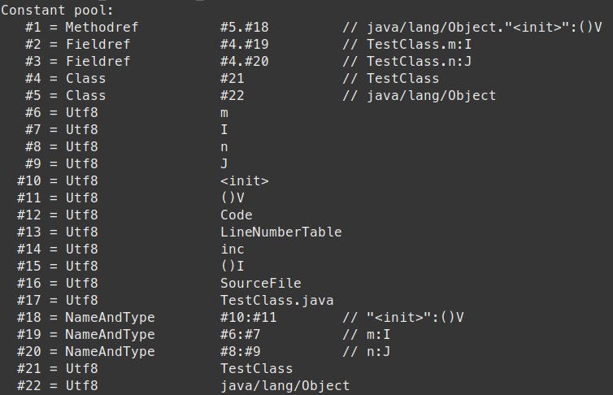

类加载的过程：加载（Loading）、验证（Verification）、准备（Preparation）、解析（Resolution）、初始化（Initialization）。
验证、准备和解析合称为链接（Linking）阶段。
#加载
- 通过一个类的全限定名获得定义此类的二进制字节流
- 将二进制字节流代表的静态存储结构转化为方法区的运行时数据结构
- 在 Java 堆中生成一个代表此类的
java.lang.Class对象，作为方法区这个类的各种数据的访问入口
二进制字节流可以从 Class 文件中获得，也可以从压缩包（jar 包、war 包）、JSP 文件生成的对应的 Class 文件以及运行时计算生成（动态代理）。
📌 Class 对象是存放在堆区的，不是方法区；类的元数据（元数据并不是类的 Class 对象！Class 对象是加载的最终产品，类的方法代码，变量名，方法名，访问权限，返回值等等都是在方法区的）才是存在方法区的。
#验证
验证阶段的目的是确保 Class 文件的字节流中包含的信息符合虚拟机规范的全部约束要求，保证这些信息被当作代码运行后不会危害虚拟机自身的安全。包括文件格式验证、元数据验证、字节码验证和符号引用验证。
文件格式验证是检查字节流是否符合 Class 文件的格式规范；元数据验证是对字节码描述的信息进行语义分析，比如类是否具有父类，父类是否继承了不该继承的类、如果不是抽象类是否实现了所有的方法、类中的字段和方法是否与父类矛盾等；字节码验证通过数据流和控制流分析程序语义是正确的；符号引用验证该类是否缺少或者被禁止访问它依赖的外部类、方法或者字段等资源。
#准备
准备阶段是正式为类变量（即静态变量，被 static 修饰的变量）分配内存并设置类变量初始值的阶段，概念上是在方法区中为类变量分配内存，JDK 8 及之后类变量随着 Class 对象一起存放在 Java 堆中，在方法区中为类变量分配内存是一种逻辑概念的表述。准备阶段要在初始化阶段开始前完成。
📌 准备阶段进行内存分配的是类变量，不包括实例变量，实例变量在对象实例化的时候随着对象一起分配在 Java 堆中。
📌 设置的初始值一般是 0，如果变量定义为 public static int value = 123;，那么在准备阶段 value 的值为 0，（把 123 赋值给 value 的操作在初始化阶段）；如果变量定义为 public static final int value = 123;，那么类字段的字段属性表中就会存在 ConstantValue 属性，从而在准备阶段就会赋值为 123。
#解析
解析阶段是 Java 虚拟机将常量池内的符号引用替换为直接引用的过程。符号引用就是 Class 文件中的 CONSTANT_Class_info、CONSTANT_Fieldref_info、CONSTANT_Methodref_info 等类型的常量。常量池表中的常量都以一个 tag 开头，其后跟着两个或更多的字节表示这个常量的信息。
CONSTANT_Class_info 的结构：
CONSTANT_Class_info {
u1 tag; // 此处为 CONSTANT_Class，值为 7
u2 name_index; // 指向全限定名常量项的索引，是常量池表中的一个有效索引，该索引处的成员必须是 CONSTANT_Utf8_info
}
CONSTANT_NameAndType_info 的结构：
CONSTANT_NameAndType_info {
u1 tag; // 此处为 CONSTANT_NameAndType，值为 12
u2 name_index; // 索引处的成员必须是 CONSTANT_Utf8_info，这个结构要么表示特殊的方法名 <init>，要么表示一个有效的字段或方法的非限定名
u2 descriptor_index; // 索引处的成员必须是 CONSTANT_Utf8_info，这个结构表示一个有效的字段描述符或方法描述符
}
CONSTANT_Methodref_info 的结构：
CONSTANT_Methodref_info {
u1 tag; // 此处为 CONSTANT_NameAndType，值为 12
u2 class_index; // 索引处的成员必须是 CONSTANT_Class_info，此结构表示一个类或接口，当前字段或方法是这个类或接口的成员
u2 name_and_type_index; // 索引处的成员必须是 CONSTANT_NameAndType_info，它表示当前字段或方法的名字和描述符
}
一个常量池的例子：

字段描述符表：
| FieldType 的字符 | 类型 | 含义 |
|---|---|---|
| B | byte | 有符号的字节型整数 |
| C | char | 基本多文种平面中的 Unicode 字符码点，UTF-16编码 |
| D | double | 双精度浮点数 |
| F | float | 单精度浮点数 |
| I | int | 整型数 |
| J | long | 长整型 |
| LClassName | reference | ClassName 类的实例 |
| S | short | 短整型 |
| Z | boolean | 布尔值 true/false |
| [ | reference | 一个一维数组 |
方法描述符中 V 表示方式不返回值，代表 void。一个方法
Object m(int i, double d, Thread t) {...}
的描述符为 (IDLjava/lang/Thread;)Ljava/lang/Object;。静态方法和实例方法的方法描述符相同，虽然实例方法除了自身定义的参数之外还要传递实例自身的引用 this，但这不通过方法的描述符来体现。
说回符号引用和直接引用的区别：
- 符号引用：用一组符号描述引用的目标，与虚拟机实现的内存布局无关，引用的目标不一定加载到了内存中。各种虚拟机实现的内存布局可以各不相同，但是它们能接受的符号引用必须都是一致的，因为符号引用的字面量形式明确定义在《Java 虚拟机规范》的 Class 文件格式中。
- 直接引用：直接引用是可以直接指向目标的指针、相对偏移量或者是一个能间接定位到目标的句柄。有了直接引用，那目标一定在内存中存在。
解析动作主要包括类或接口、字段、类方法、接口方法、方法类型、方法句柄和调用点限定符这 7 类符号引用。
-
类或接口的解析
Java 虚拟机为了解析类 D 中标记为 N 的类或接口 C 的未解析符号引用，会有以下步骤：
- 如果 C 不是数组类型，那么 D 的类加载器会被用来加载类或接口 C。在加载的过程中，由于元数据验证、字节码验证的需要，可能又会加载其他的类，一旦这个加载过程出现异常，就会解析失败而退出。
- 如果 C 是数组类型且元素类型是引用类型，那么表示指向元素类型的类或接口的符号引用按照 1 中的规则递归解析。
- 检查 C 的访问权限，如果 C 对 D 不可见，那么解析过程失败。
-
字段解析
如果要解析从 D 指向类或接口 C 中某个字段的未解析符号引用，那么必须先解析指向字段引用所提到的那个 C 的符号引用（即 CONSTANT_Fieldref_info 中的 class_index 项），如果在此过程中出现异常，解析失败，如果成功则会对字段进行后续的搜索：
- 如果 C 中声明的某个字段，与要解析的字段有相同的名称和描述符，查找成功，返回这个字段的直接引用。
- 否则，如果在 C 中实现了接口，将会按照继承关系从下往上递归搜索各个接口和它的父接口，如果接口中包含了简单名称和字段描述符都与目标相匹配的字段，则返回这个字段的直接引用，查找结束。
- 否则，如果 C 不是 java.lang.Object 的话，将会按照继承关系从下往上递归搜索其父类，如果在父类中包含了简单名称和字段描述符都与目标相匹配的字段，则返回这个字段的直接引用，查找结束。
- 否则，查找失败，抛出 NoSuchFieldError。
如果查找成功，但是该字段对 D 不可见，字段解析会抛出 IllegalAccessError。
-
普通方法解析
方法解析和字段解析一样，为了解析 D 中对类或接口 C 里某个方法的未解析符号引用，首先需要解析出方法引用提到的对 C 的符号引用（即 CONSTANT_Methodref_info 中的 class_index 项），在解析类引用时出现任何异常都会退出，如果解析 C 成功，开始解析方法引用：
- 如果发现 C 是个接口，直接抛出异常。（因为在 Class 文件的格式中，类的方法和接口的方法引用的常量类型是不一样的，即 CONSTANT_Methodref_info 和 CONSTANT_InterfaceMethodref_info）
- 在类 C 中查找是否有简单名称和描述符都与目标相匹配的方法，如果有则返回这个方法的直接引用，查找结束。
- 否则，在类 C 的父类中递归查找是否有简单名称和描述符都与目标相匹配的方法，如果有则返回这个方法的直接引用，查找结束。
- 否则，在类 C 实现的接口列表及它们的父接口之中递归查找是否有简单名称和描述符都与目标相匹配的方法，如果存在匹配的方法，说明类 C 是一个抽象类，这时候查找结束，抛出 AbstractMethodError 异常。（C 没有实现接口中的抽象方法，那么它自己必须声明为抽象类）
- 否则，查找失败，抛出 NoSuchMethodError 异常。
最后，如果返回了直接引用，检查权限，如果该方法对 D 不可见，则抛出 IllegalAccessError。
总结来说：要解析类的方法，如果发现符号引用是个接口，则抛异常；然后在类 C 和类 C 的父类中查找；找不到则在实现的接口和接口的父接口中找，这时找到说明类 C 是抽象类，也要抛异常；最后检查访问权限。
-
接口方法解析
为了解析 D 中对类或接口 C 里某个方法的未解析符号引用，首先需要解析出方法引用提到的对 C 的符号引用（即 CONSTANT_Methodref_info 中的 class_index 项），在解析类引用时出现任何异常都会退出，如果解析 C 成功，开始解析方法引用：
- 如果发现 C 是个类，直接抛出异常。
- 否则，在接口 C 中查找是否有简单名称和描述符都与目标相匹配的方法，如果有则返回这个方法的直接引用，查找结束。
- 否则，在接口 C 的父接口中递归查找，看是否有简单名称和描述符都与目标相匹配的方法，如果有则返回这个方法的直接引用，查找结束。
- 否则，抛出 NoSuchMethodError。
在 JDK 9 中的接口中添加了私有方法，因此需要检查访问权限，如果接口方法对 D 不可见也会抛出 IllegalAccessError。
#初始化
初始化阶段是执行类构造器 <client>() 方法的过程。<client>() 方法是由编译器自动收集类中的类变量的赋值操作和静态语句块（static{} 块）中的语句合并而成的。虚拟机会保证子 <client>() 方法执行之前，父类的 <client>() 方法已经执行完毕，如果一个类中没有对静态变量赋值也没有静态语句块，那么编译器可以不为这个类生成 <client>() 方法。
静态语句块中只能访问到定义在静态语句块之前的变量，定义在它之后的变量，在前面的静态语句块可以赋值，但是不能访问。
|
|
类初始化的时机，有且仅有以下六种情况立即进行初始化：
- 执行 new, getstatic, putstatic, 或 invokestatic 四种字节码指令时。
- 对类进行某些反射调用时。
- 子类初始化时会先触发父类的初始化。
- 含有默认方法（default 关键字）的接口的实现类初始化时会先初始化接口。(Java 8 及以上)
- 虚拟机启动时会初始化主类（含有 main() 方法的类），还有一些特定的类也是虚拟机内部初始化的（如 Object, String, Class 等）
- 使用 MethodHandle 返回静态方法的句柄时，对应的类会做初始化。
#参考
[1] 深入理解 Java 虚拟机: JVM 高级特性与最佳实践（第 3 版）. 周志明. 机械工业出版社.
[2] Java 虚拟机规范（Java SE 8版）. 蒂姆·林霍尔姆（Tim Lindholm）等. 机械工业出版社.